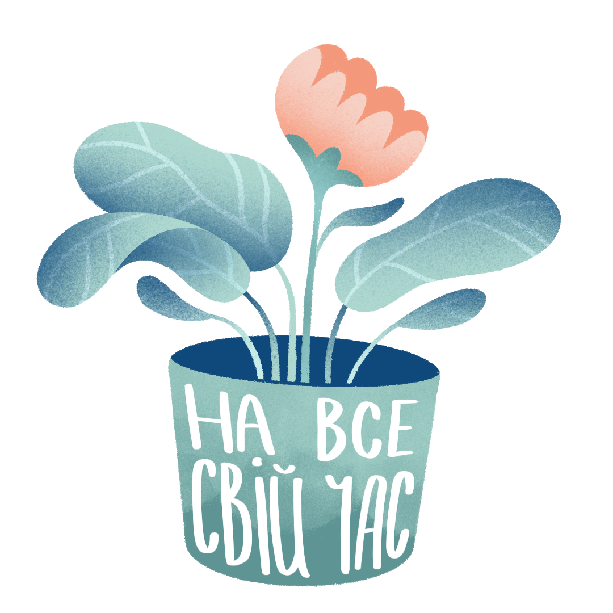

<section class="section_whenUse">
    <div class="container">
        <div class="whenUse">
            <div class="whenUse__img"></div>
            <div class="whenUse__item">
                <div class="whenUse__title title">КОЛИ КОРИСТУВАТИСЯ?</div>
                <ul class="whenUse__list">
                    <li class="whenUse__link">коли тривожно і емоції переповнюють;</li>
                    <li class="whenUse__link">коли хочеться розвивати усвідомленість;</li>
                    <li class="whenUse__link">коли є бажання розібратися в собі чи усамітнитися.</li>
                </ul>
                <div class="whenUse__text">
                    У подарунок до кожного щоденника ми додаємо наші терапевтичні стікери. Їх малювала ілюстраторка Анастасія Андрійчук.
                </div>
                <div class="whenUse__sticker"></div>
            </div>
        </div>
    </div>
</section>